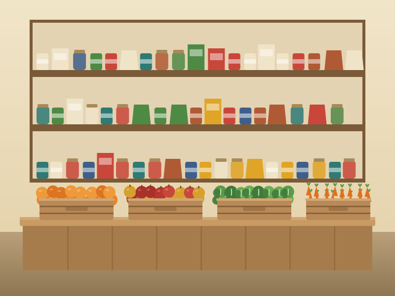

- 212,400pounds of food distributed in 2025
- 1,150households visited in 2025
- 80+regular volunteers in 2025
- 1998the year Cinderwell began
Our Mission
To make sure every neighbor in Fennick Hollow has good food on the table, and is treated with dignity when they come to get it.
We are a neighborhood organization, run by staff and volunteers who live here. Most of what we hand out is donated by local grocers, farms and food drives, with the rest purchased with gifts from the community.
What We Do
Each week we receive, sort and hand out thousands of pounds of food. Neighbors choose what fits their family, much like a small grocery store, and volunteers are on hand to help carry bags to the car.
We also keep a supply of diapers, hygiene items and pet food on hand, as donations allow.
Our Programs
Neighborhood Pantry
Choose your own groceries on Tuesday, Thursday and Saturday: canned goods, grains, dairy, eggs, and fresh produce when we have it.
Saturday Fresh Produce Market
Local farms deliver on Saturday mornings and we put the harvest straight out on the tables.
Tuesday Evening Supper
A hot meal in our side room at 5:30 pm, open to everyone, no sign-up needed.
Home Delivery
Volunteer drivers bring groceries to neighbors who cannot get to the pantry. Call the office to be added to a route.
Our Team
Marguerite Oyelaran
Founder and board chair
Daniel Haskell
Executive director
Priya Raman
Volunteer coordinator
Tomas Whitlock
Warehouse and logistics lead
Lena Brandt
Produce partnerships
Omar Adeyemi
Home delivery route lead
How You Can Help
Volunteer
Saturday sorting and pantry shifts run all year. Short orientations are held before each Saturday sort. Teens 14 and up are welcome with a parent or guardian.
Host a Food Drive
Collect canned goods and pantry staples at your school, workplace or congregation. We will send a flyer, a list of most-needed items and a pickup time.
Give
Gifts of any size, one-time or monthly, help us buy the staples that donations do not cover.